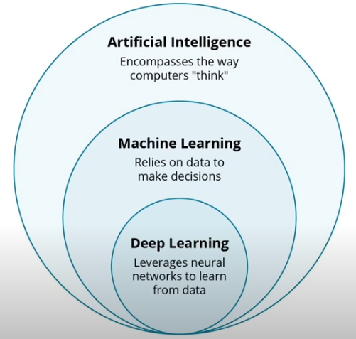
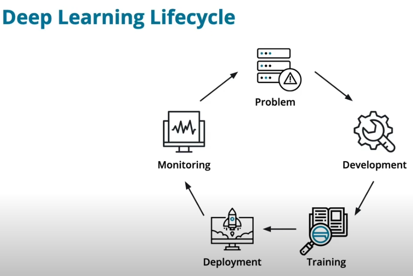

Deep Learning
Preview
- How experts think about Deep Learning. This gives us a framework to understand when we should use Deep Learning.
- The differences between Artificial Intelligence, Machine Learning, and Deep Learning.
- The origins and history of Deep Learning.
- Tools for using Deep Learning.
- Applications of Deep Learning.
Books to Read
Grokking Deep Learning by Andrew Trask. Use our exclusive discount code traskud17 for 40% off. This provides a very gentle introduction to Deep Learning and covers the intuition more than the theory.
Neural Networks And Deep Learning by Michael Nielsen. This book is more rigorous than Grokking Deep Learning and includes a lot of fun, interactive visualizations to play with.
Inside Deep Learning by Edward Raff is an excellent intermediate book that covers much of the mathematical background, in-depth looks at modern neural network architectures, and develops a good intuition.
The Deep Learning Textbook from Ian Goodfellow, Yoshua Bengio, and Aaron Courville. Often simply called "the Deep Learning book", it is a rigorous treatment of the mathematics and theory behind deep learning, in addition to covering a number of important practical issues.
Deep Learning Architectures by Ovidiu Calin is by far the most theoretical book on this list, and the most challenging in terms of mathematical prerequisites. However, if you want to conduct groundbreaking research in neural networks, this book is an excellent reference to have on hand.
Deep learning thoughts from experts
Deep learning is the path to everything, to artifical general intelligence (singularity)
Empherical results of deep learning are unparrellel
People think of one tool in the toolbox, however there are many tools
Draw backs 1. lack of causaility 2. lack of explainability 3. having to check the results
AI, ML, & Deep Learning

Deep learning is a subfield of AI and ML
As we can see, Artificial Intelligence is the overarching field and includes algorithms like Local Search and Logic Programming. Machine Learning is a part of Artificial Intelligence and includes models like Logistic Regression and Decision Trees. Deep Learning is a subfield of Machine Learning that consists of various neural network models.
DL life cycle

Tools For Deep Learning
Development tools - Integrated Development Environment - Code Editor - Interpreter/Compiler - Jupyter Notebooks - Note: Each cell is executed on its own, and it works well for environments to prototype or present code. However, there are limitations: - Editing can make you lose state - Code deployed production should be in .py rather than notebooks
Deep Learning Frameworks - PyTorch (aka Torch) - TensorFlow/Keras - JAX (Develop by google similar to numpy)
Training Tools
- Experiment management like TensorBoard or Weights and Biases
- Observe accuracy and loss at training time
- Model versioning like DVC, Neptune, and Pachyderm
- Remedy issues within the model across different versions of the model
- DVC is very similar to Git
Pytorch Basics
import torch
import numpy as np
data = [[1,2], [3,4]]
data_tensor = torch.tensor(data)
data = [[1,2], [3,4]]
np_data = np.array(data)
data_tensor = torch.tensor(np_data)
torch.zeros(5)
torch.ones(2, 2)
torch.rand(3, 3, 3)
zero_tensor = torch.zeros(3, 3)
ones_like_zeros = torch.ones_like(zero_tensor)
# numpy like indexing
zero_tensor[0] # return the zero'th row
ones_like_zeros[:, 0] # return the column
# copy of a tensor
x = ones_like_zeros.detach()
x[:, 0] * 5
# matrix multiplication
rand1 = torch.rand(5)
rand2 = torch.rand(5)
torch.matmul(rand1, rand2)